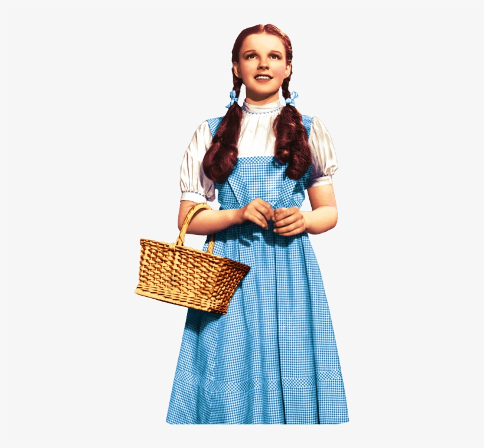

Long ago, there was a little girl named Dorothy, who lived with her aunt and uncle. Her best friend was her dog, Toto . Dorothy and Toto would play together for hours. They were playing outside one day when the wind began to blow. The sky got very dark, thunder rolled, lightening flashed and the wind began to blow even harder. It was a cyclone. Dorothy called out to her aunt and uncle but they were not there
She ran into her house and locked herself in her room along with Toto. For hours and hours, the little house spun through the clouds until suddenly, the wind stepped and the house fell to the ground with a great crash, Dorothy and Toto slowly opened the front door, it was a beautiful morning outside but it was clear to Dorothy that she was not in Kansas anymore. The was a wonderful green land with strange flowers and the smallest houses she had ever seen. There was also a road made of yellow bricks.